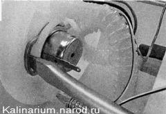

Датчик указателя уровня топлива и регулятор давления топлива - заменаСовет Нарушения в работе датчика указателя уровня топлива чаще всего связаны с износом контактной части его реостата. В этом можно убедиться, измеряя его электрическое сопротивление омметром при плавном перемещении рычага с поплавком из одного крайнего положения в другое. Неисправный датчик следует заменить. Снятие 1. Снимаем топливный модуль. 2. Для снятия датчика указателя уровня топлива сдвигаем крышку топливного модуля. 3. Снимаем наконечник провода с вывода регулятора давления топлива. 4. Отжимаем фиксатор колодки проводов и отсоединяем колодку от крышки топливного модуля. 5. Шлицевой отверткой освобождаем фиксатор колодки проводов. 6. Отсоединяем колодку от топливного насоса. 7. Освобождаем два фиксатора датчика уровня топлива. 8. Сдвигаем датчик по пазам заборной камеры топливного модуля и снимаем датчик. Установка Устанавливаем новый датчик указателя уровня топлива в обратной последовательности. РЕГУЛЯТОР ДАВЛЕНИЯ ТОПЛИВА - ЗАМЕНАСовет При подозрении на неисправность регулятора давления его необходимо заменить. Снятие 1. Снимаем топливный модуль. 2. Отсоединяем наконечник провода от регулятора давления топлива 3. Шлицевой отверткой поддеваем и вынимаем пружинный фиксатор регулятора давления. 
4. Вынимаем регулятор из крышки топливного модуля. Установка Устанавливаем новый регулятор давления топлива в обратной последовательности, предварительно нанеся на уплотнительные кольца тонкий слой моторного масла. |